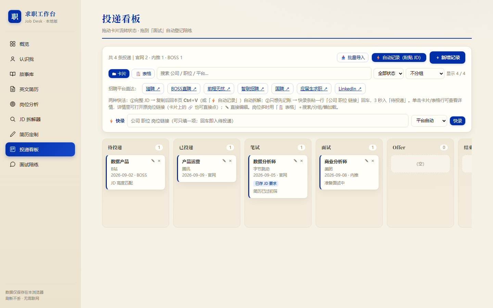
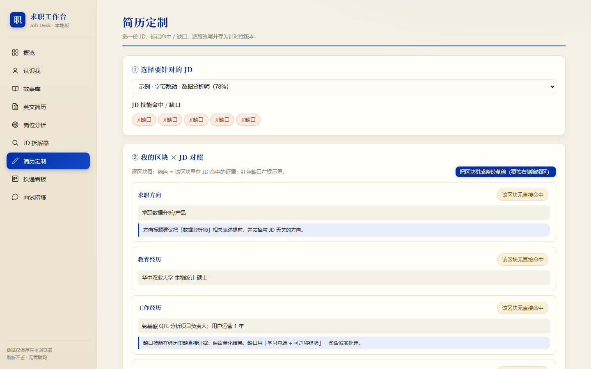

把求职里最重复、最容易漏的环节——扒 JD、对技能、改简历、记进度——做成一个纯前端、离线可用、双击即开的个人工作台。
求职时信息散落在简历、JD 截图、Excel 表格和脑子里：投了哪家、进度到哪、这份 JD 到底要什么、简历该怎么改——全靠手动维护，容易乱、容易漏。
把整条流程收进一个本地网页应用：录入简历 → 解析技能 → 拆解 JD → 匹配岗位 → 定制简历 → 看板记进度 → 面试陪练。一次录入，处处复用。
独立完成——从需求梳理、交互设计到全部前端实现。
刻意选择零依赖：一个 HTML 文件双击即用，不需要装环境、不需要联网、不需要服务器。
简历、JD、投递记录、面试题全部结构化存进本地，跨模块复用，不再靠脑子记。
粘贴 JD，自动分离「职责」与「要求」，提取关键词，并逐条比对技能，告诉你已覆盖 / 可挖 / 真缺失。
用技能去匹配 8 类岗位方向，算命中率并指出补强方向，把"感觉能投"变成"有依据地投"。
所有数据只存在浏览器 localStorage，不经过任何服务器；支持一键全量备份与恢复。
以下两张图为工作台实际运行截图（无头浏览器抓取，已 seed 真实数据）。

拖动卡片流转状态，从「待投递」一路推到「Offer」；卡内显示公司 / 岗位 / 渠道 / 备注 / 投递日期。

选一份 JD，区块逐条对照，红标缺口直接显示；改写后一键存为针对性版本。
下面是工作台核心算法的精简版，可直接运行：添加你的技能，实时计算 8 类岗位的匹配度与缺口。